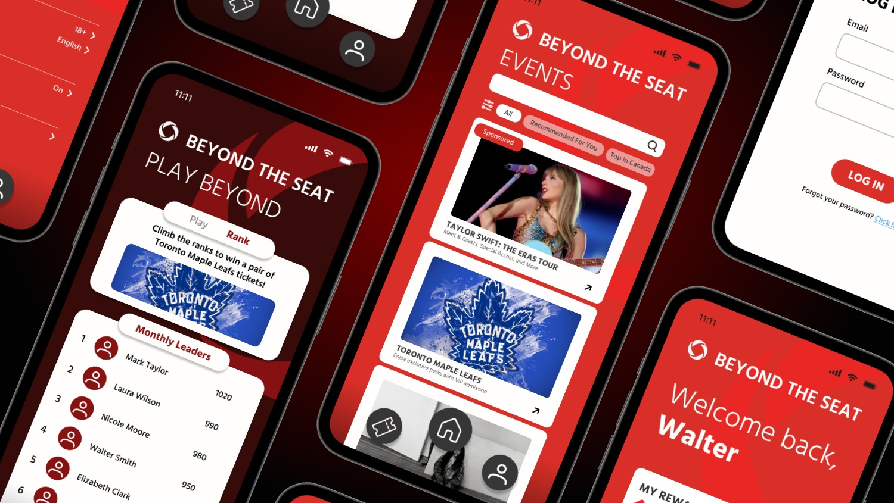

Socialpruf Product Marketing
Co-op

Organic digital growth that drove 120k+ views and 3700 website visits.
Rogers Beyond The Seat App
Second Time uXperience Design Jam Winner

A connected in-app experience turning live events into a continuous service story.
GBDA Society President
Student Leader

Refreshed identity and events reaching 500+ students and 100k+ combined views.
Sun Life Financial Literacy Tool
uXperience Design Jam Winner

A goal-based learning tool making financial literacy feel tailored, visual, and achievable.